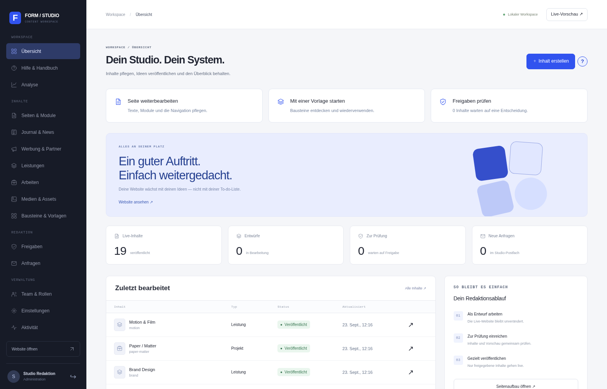
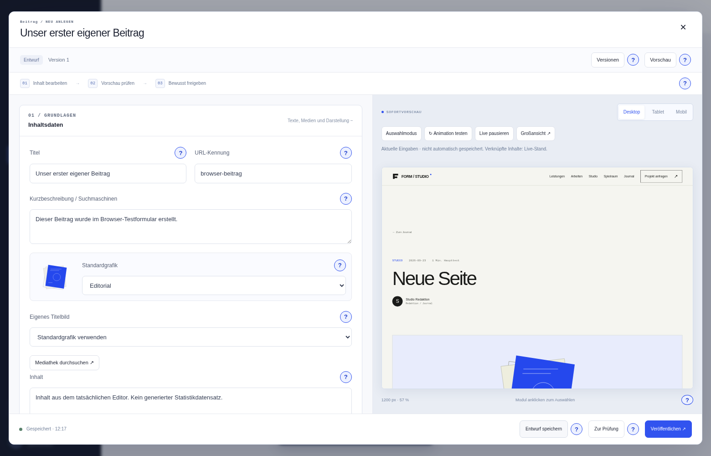
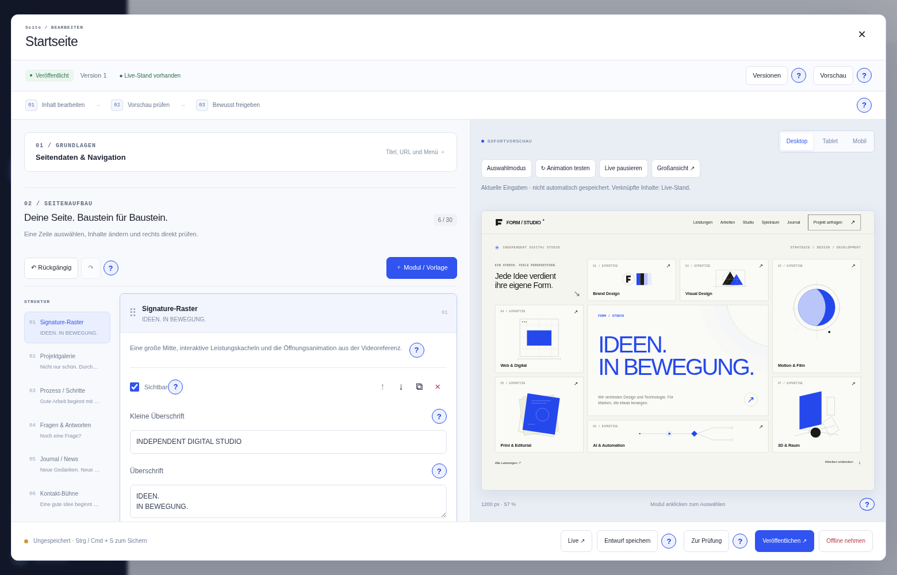
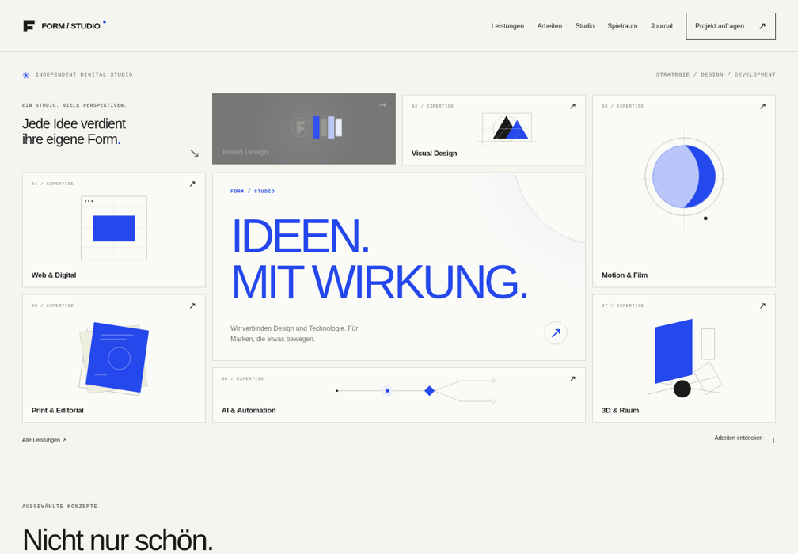
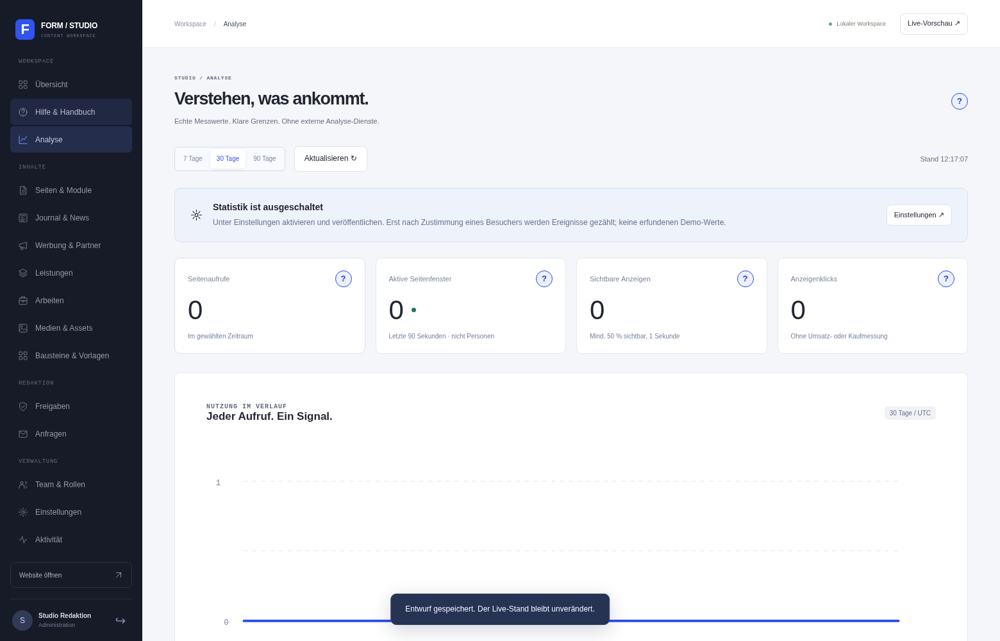
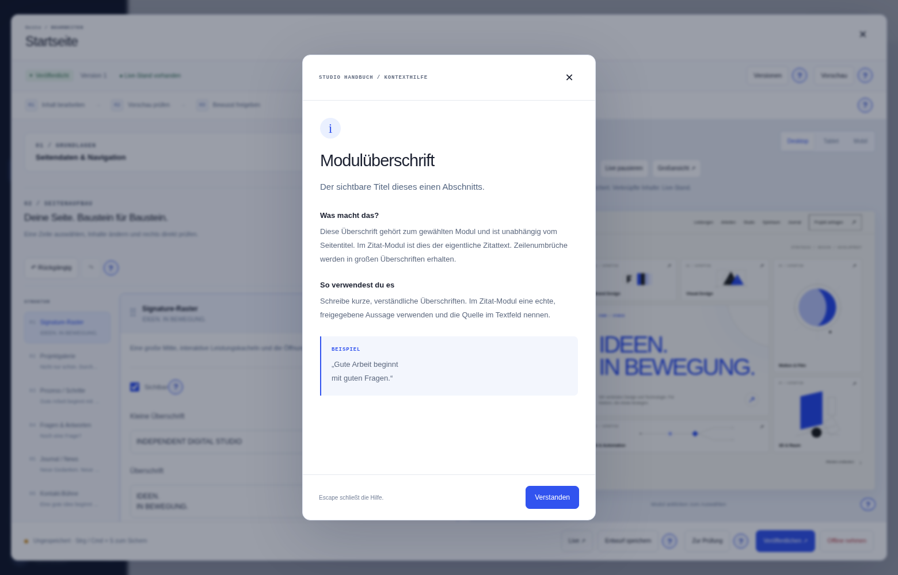
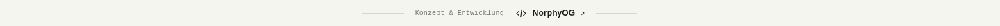

Dein Studio. Auf deinem Rechner.
- ZIP vollständig entpacken. Voraussetzung: Python 3.11 oder neuer.
START-WINDOWS.cmdöffnen. Alternativ im Projektordnerpython start.py.- Beim ersten Start installiert das Programm die Python-Abhängigkeiten. Dafür wird Internet benötigt.
- Im Admin-Setup den einmaligen Code aus dem Terminal eingeben, Konto und eigenes Passwort anlegen.
Terminal offen lassen, während die Website läuft. Beenden mit Strg+C. Zum normalen Start werden weder Node.js noch ein externer Datenbankdienst gebraucht.

Eine Idee wird ein Beitrag.
- Im Admin Journal & News öffnen und einen neuen Inhalt anlegen.
- Titel, URL-Kennung, Kurzbeschreibung und Haupttext ausfüllen. Autor, Kategorie und angezeigtes Datum prüfen.
- Eigenes Titelbild auswählen oder eine Standardgrafik benutzen. Zusätzliche Module ergänzen Bilder, Tabs, Zitate oder Partnerflächen.
- Entwurf speichern sichert die Arbeit. Veröffentlichen macht sie öffentlich; die Redaktion reicht stattdessen zur Prüfung ein.
Das öffentliche Journal liegt unter /news. Auf einer Seite erscheint es mit dem Modul Journal / News: Kategorie optional wählen, ein bis zwölf Beiträge anzeigen. Weitere Inhalte bleiben im durchsuchbaren Journal erreichbar.
Was macht das Beitragsdatum?
Es wird im Journal angezeigt und sortiert die Beiträge. Es ist keine geplante Freischaltung. Ein veröffentlichter Beitrag mit einem zukünftigen Anzeigedatum ist trotzdem sofort öffentlich.

Zwanzig Bausteine.
Deine Zusammenstellung.
Unter Modul / Vorlage findest du die Bausteine mit Beschreibung und Hilfe. Acht vorbereitete Seitenaufbauten lassen sich als Ausgangspunkt verwenden. Eingefügte Vorlagen und eigene Bausteine sind unabhängige Kopien.
Die neue Vorschau
Auswahlmodus: Ein Modul in der Vorschau anklicken, um es links zu bearbeiten. Testmodus: Tabs, FAQ und Vergleichsregler direkt ausprobieren. Links und Formulare verlassen oder senden aus der Vorschau nicht.
Animation testen spielt die ausgewählte bzw. sichtbare Choreografie erneut ab. Live pausieren hält die Ansicht beim Schreiben an. Großansicht gibt der Vorschau mehr Platz. Desktop, Tablet und Mobil verändern die echte Vorschau-Viewportbreite.

Wie weit reicht der Baukasten?
30 Module pro Seite/Beitrag, meistens 20 Einträge je Modul. Vergleich und Kontakt höchstens zwei. 100 gespeicherte eigene Bausteine, 50 lokale Rückgängig-Stände für Module. Neue Geschäftsfunktionen, beliebige verschachtelte Layouts, neue Modultypen oder Fremdskripte sind keine Adminoption und brauchen Entwicklung.
Nicht nur ein Intro.
Leistungskacheln reagieren mit Kontrastwechsel, eigener SVG-Bewegung und perspektivischem Versatz. Signature-Raster und Kontakt-Bühne können beim erneuten Betreten des Sichtbereichs wieder auftreten. Für andere Module in den Darstellungsoptionen die wiederholte Animation wählen.
Spotlight, gestaffelte Karten und Themenwechsel ergänzen die Öffnungssequenz. Native Seitenübergänge sind für unterstützende Browser vorgesehen; dort ohne Unterstützung bleibt der Seitenwechsel normal. Reduzierte Bewegung aus den Systemeinstellungen wird berücksichtigt.
In einer neuen Installation führt die Navigation zu Spielraum: Dort kannst du Tabs, Bildvergleich und eine Demo-Partnerfläche ausprobieren. Ein Update fügt diese Demoseite nicht automatisch in deine bestehenden Inhalte ein.

Einmal pflegen.
An mehreren Stellen zeigen.
- Unter Werbung & Partner eine Kampagne erstellen: Titel, Partnername, Grafik, Text und Zieladresse.
- Optional Start und Ende eintragen. Diese Daten gelten als UTC-Kalendertage.
- Kampagne veröffentlichen.
- Auf einer Seite oder in einem Beitrag das Modul Werbeplatz hinzufügen und die Kampagne über die Auswahl verbinden.
- Die Seite ebenfalls speichern und freigeben.
Ohne veröffentlichte Kampagne im gültigen Zeitraum verschwindet der Platz öffentlich. In der privaten Vorschau wird die fehlende Zuordnung erklärt. Änderungen am veröffentlichten Kampagnenstand erscheinen an allen verbundenen Plätzen.
Kann ich AdSense-Code oder andere Skripte einkleben?
Nein. Der aktuelle Werbebaustein ist für eigene Partneranzeigen und sichere Verlinkungen gedacht. Fremde Skripte, Tracker und beliebige HTML-Einbettungen sind nicht freigeschaltet. Eine Werbenetzwerk-Integration braucht einen gesonderten technischen und betrieblichen Entwurf.
Messwerte statt Vermutungen.
Die Statistik ist zunächst aus. Unter Einstellungen → Optionale lokale Statistik anbieten aktivieren und veröffentlichen. Danach fragt die Website jeden Gast nach Zustimmung. Ohne Zustimmung werden keine Statistikereignisse gesendet.
Das Admin-Diagramm zeigt Seitenaufrufe der letzten 7, 30 oder 90 Tage. Dazu kommen aktive Seitenfenster, Top-Seiten sowie Sichtungen und Klicks von Kampagnen. Tageswerte können auch als Tabelle gelesen werden.

Welche Daten werden gespeichert und wann gelöscht?
Nur Tageszähler mit Seitenpfad oder Kampagnen-ID, keine persönlichen Browserhistorien oder IP-Adressen in der Statistik. Aktive Tab-Token bestehen nur im RAM und laufen nach 90 Sekunden ab. Server-/Proxylogs sind gesondert zu betrachten.
Ältere Tageswerte werden beim nächsten gezählten Ereignis mit fälliger Bereinigung entfernt. Ohne neue Ereignisse läuft kein Löschdienst. Der Admin kann sämtliche Statistikwerte manuell löschen. Backups brauchen eigene Aufbewahrungsregeln. Details in Sicherheits- und Statistikmodell.
Das Fragezeichen ist der Einstieg.
Die blauen ?-Schaltflächen zeigen bei Hover oder Tastaturfokus eine Kurzinfo. Anklicken oder Antippen öffnet die ausführliche Erklärung: Bedeutung, Vorgehen, Beispiel und Grenzen. Das Schließen verwirft keine Eingaben.
Zusätzlich gibt es ein durchsuchbares Handbuch. Suche dort etwa nach Werbung, Datum, Freigabe oder Vorschau.

Firma anpassbar. Urheber sichtbar.
Der Hinweis Konzept & Entwicklung — NorphyOG steht dezent unter dem öffentlichen Footer und verlinkt auf dein bestätigtes GitHub-Profil. Er ist kein löschbares CMS-Modul. Firmenname, Inhalte und Akzentfarbe bleiben separat anpassbar.
Mit vollständigem Quellcodezugriff kann ein Betreiber Templates verändern. Der Hinweis ist deshalb nicht technisch unentfernbar; es gibt keine versteckte Überwachung oder externe Rückrufverbindung.

Vor dem Livegang.
Eigene Texte, Bilder, Marke und Rechtstexte ergänzen; Demoinhalte ersetzen. Das Kontaktformular speichert Anfragen, verschickt noch keine E-Mails. Shop, Bezahlung, Buchung und Newsletter sind nicht implementiert.
Eine Serverinstanz, SQLite-Datenbank und lokale Medien. Inhaltslisten und Archive sind paginiert, aber unbegrenzte Lastfestigkeit ist nicht zugesichert. Bei Mehrinstanzbetrieb brauchen Datenbank und flüchtiger Zustand einen eigenen Migrationsschritt.
Testbericht · Architektur · Update-Anleitung · Technische README